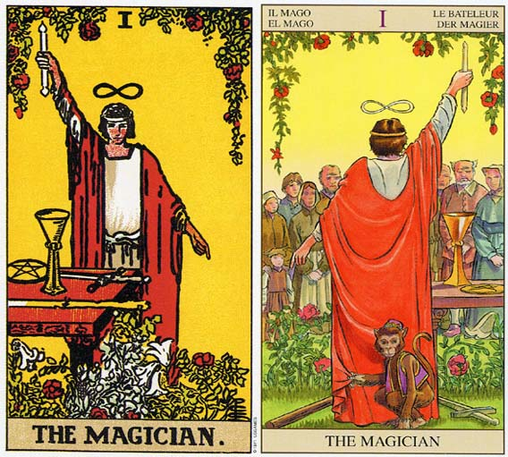

塔罗牌魔术师牌面故事1.魔术师高举拿着令牌的右手指向天，左手食指指向地，他本人就是沟通上天与地面的桥梁。他身前的桌上放着象征四要素的权杖、圣杯、宝剑与星币，同时也代表塔罗牌的四个牌组。他身穿的大红袍子象征热情与主动，白色内衣代表纯洁与智慧的内在。注意他的腰带是条蛇，蛇虽然经常象征邪恶，但在这里象征智慧与启发。魔术师头顶上有个躺下来的8字，代表无限。画面前方和上方的红玫瑰象征热情，以及白百合象征智慧。此时，万事齐备，可以开始他的新计划了。和愚人牌同样鲜黄色的背景，预示未来的可能。
2.魔术师编号1，正是所有数字的开始，也是代表沟通的数字。在78张牌中，魔术师更扮演大小牌间衔接的角色。此外在占星学中，魔术师这张牌属于水星，代表沟通。因此，在实际占卜时，魔术师可代表所有与沟通有关的事务，无论口头或书面。例如发表演讲、写文章、中介、联络人等。魔术师口齿伶俐、文笔流畅、思路清晰、是个有能力说清楚、讲明白的专家型角色。
塔罗牌魔术师解释
1.牌 名：魔术师 The Magician
2.关 键 字：观察、开始、创造
3.星 相：水星
4.四 要 素：水
魔术师，有着无穷尽的创造力，有着无限大的能量。他一手向天，一手指地，象征着对于庞大能量的承载与疏导。案上的四元素象征表示了他对于元素，世间真理奥义的统御和了若指掌。出现在生活之中的魔术师，理性，聪慧，有着极佳的模仿能力，总是能在各种场合寻找到自己的一席之地。充分的明白自己的优势，并且将之付诸行动，让周围的人都会喜欢他。魔术师作为男性的象征，也代表了旺盛的精力，开阔的思维和接受创新的能力。但是生活中，比较难出现如此睿智并且成熟的魔术师。大多数的魔术师，通常能做到知其然，但是却未必知其所以然。他需要进一步的成长，才可领悟感性的世界。
塔罗牌魔术师牌面解释
1.这魔术师在一件白色紧身衣外搭一件红色长袍，并于腰际系一条蛇作为皮带。右手向上伸展指向天空，而左手则朝下指着地上。头上方垂悬着许多红玫瑰，脚旁则有更多的红玫瑰和白百合。头上方的符号“&无限”代表无穷，暗示着他的知识是无始无终的。桌上的工具，以前是装在愚人的行囊当中，象征正确的动机（圣杯）、清晰的计划（宝剑）、充沛的热情（权杖），以及确实的执行（五角星）的组合——对于达成目标而言，这是个相当强而有力的组合。红玫瑰象征热情或持久力，白色百合花则意味着纯洁的动机。作为皮带的这条蛇正吞食自己的尾巴。，象征许多事情既无所谓开始，也无所谓结束。塔罗牌魔术师解释
2.这张牌代表在某些可能性当中实现若干事情。可能性是毫无价值的，除非它被实现了。我们每个人都有极大的潜能，但并不是每个人都会去实现这些潜能。如果追究到底的话，那我们可以说，没有人真正发挥过他所有的潜能。
3.魔术师从天空中（灵感）接受能量，并将这些能量导入某种具体且真实的东西——土地。也就是说他将想法转化成一些我们看得到、摸得着的事物。他运用他的意志力产生了具体的成果；他不是被生活的潮流推着走，而是在这些潮流中为他自己行动，并做出具体的成果。
魔术师解牌参考
正位
1.事情的开始，行动的改变，熟练的技术及技巧，贯彻我的意志，运用自然的力量来达到野心。
2.成功、果断、好的开端、计划完美、发展空间大、智力非凡、思维活跃、想象力丰富、拥有默契的伴侣、出现新恋人
3.意味着你在事业上有良好的动机、宽阔的心胸和充足的准备，一切都在你的计划之中，把握住机会向着成功稳步前进。爱情更是游刃有余，外在的环境根本对你没有作用，处于主动地位。塔罗牌魔术师解释
逆位
1.失败、态度消极、做事匆忙、优柔寡断、才能平庸、缺乏技术、没有判断力、没有创造力、爱情没有进展、注意伴侣的行为
2.意志力薄弱，起头难，走入错误的方向，知识不足，被骗和失败。
3.则意味着你有投机心态，躲在自己的保护层中生怕受到伤害，对事业的态度有了些许偏差，表现出漫无目标和缺乏自律。不肯遵守一些基本准则，不惜靠控制对方甚至毁灭对手的方式来实现自己的目的，所以将带来精神、情感或健康上的种种问题。
魔术师正位释义
1.基本含义——受好奇心驱使展开调查研究、具有独创性、具备发展潜力、展开新的计划并获得成功、幸福的开始。
2.恋爱婚姻——心有灵犀一点通、新恋情的展开、备受异性欢迎、彼此的性格结得以发挥、彼此配合默契、品尝爱情的喜悦、轻率的交往、变更约会地点和方式可以令彼此保持新鲜感。
3.人际财富——结交更多的朋友、寻得良师益友、寻得彼此互补的合作对象、能够以合理的代价获得想要的东西。
4.工作学业——以新的方式读书获得好的成绩、事务处理得当、高效计划、注重细节、能够充分发挥自己所学、创意得到旁人认同、适合艺术方面的工作免费八字算命、喜欢充满创新的工作、适合从事技术人员、播音员、大众传媒等相关工作或艺术设计工作。
5.健康生活——精神状态稳定、适合知性的装扮。
6.其它——喜欢阅读并从中获得知识和快乐、可能会有短期的履行、对语言学习颇有兴趣、适合郊外野餐、拥有敏捷的运动神经、适合参加辩论会、善于模仿并因此获益、处事机灵善变、事事顺利。
魔术师逆位释义
1.基本含义——犹豫不决、因学艺不精而败北、看待事物过于消极、易受骗上当、遇事光说不练。
2.恋爱婚姻——不善于向对方表白、缺乏爱情技巧、易受花言巧语者蒙骗、对爱情无法专精、心情过于浮躁、冷酷无情、无法向对方表达心意。
3.人际财富——因态度不明确失信于人、虚假的表面敷衍、不够体贴对方、遭遇欺诈、容易乱花钱、因好赌倾家荡产。塔罗牌魔术师解释
4.工作学业——预期的成绩没有起色、努力不足、谎言被揭穿、需要改变学习方法、考试失误、成绩退步、工作一成不变。
5.健康生活——精神紧张需要休息、情绪暴躁容易激动、呼吸器官或大脑负荷过重、着装不搭调。
6.其它——旅行计划取消、遭遇交通堵塞、因懦弱造成竞技失败、不听他人劝告。
魔术师大体上的意义
1.魔术师这张牌意味这是个着手新事物的适当时机。对的时间、对的机会、对的动机，使你的努力值回票价。对于展开行动、实现计划而言，这正是一个良好时机。由于你已为实现计划扎下良好基础，所以新的冒险很可能会实现。清楚的方向感和意志力的贯彻，大大的提升了成功的可能性。
2.魔术师意味着一个拥有强烈意志、受过训练的心智及清晰的目标感的人。对于自己的目标，他拥有很好的方向感，且打开心胸，接纳新的理念。
3.魔术师是形容一种扎根于现实的伙伴关系，没有受到物质上的种种限制。它暗示一种主动的两性关系，而且可能是伴侣中的一个提供灵感，另一位脚踏实地，让这些主意变成具体成果。
倒立的魔术师
1.当魔术师倒立时，意味他失去和土地或天空的联系。如果他失去了和土地的联系，可能会变得不切实际，而导致精神、情感或身体健康上出问题，他会变的漫无目标且缺乏自律。当倒立时，及时他自天空中接受到了能量，却无法成功的将它导入土地，这份能量相当的强而有力，在体内积累之后会导致精神活情绪上的困扰。幻觉、精神分裂症、或深井的精神崩溃、或严重的犹豫都有可能接踵而至。
2.倒立的魔术师可能是在形容某人，他并不了解那能量是经由他在传递，而非出自他本身。他可能会以逐渐毁掉对方的方式对别人进行控制，可能是暗中作梗，或以任何他想得到的方法，这可能包括妖术、雇人暗杀或自己动手。
3.当倒立的魔术师接触到土地，而和天空失去联系时，他就会失去了精神上的联系了。失去这份联系，便丧失了良知，并可能做出违反社会的行为。
4.简单而言，魔术师倒立暗示你需要拥有和天空或土地更强的连接，因为此时你已经失去正确的动机、计划、热情或务实的态度，来完成你内心的愿望。
塔罗牌魔术师正位爱情
1.这是一段让人感到愉快的相处，你们在一起总会有很多说不完的话语，你/他如此幽默，让双方在一起时空气都弥漫着愉快的味道。同时在现阶段来讲，这也是一份前景不错的爱情，愉快的相处模式，又不会太亲密让人疲惫，这使得你们的关系很快的被拉进，只要能够继续保持这样的模式，你们的感情很快能有再进一步的发展哦。
2.对人感情想法：在你/他对方是非常有魅力同时让人愉快的，不仅仅其外表举止是你/他喜欢的方面，性格和给人的感觉也能够深深的吸引你/他。
3.建议：你平日里在感情中需要多主动一点，别总等着对方来主动接近你。并且你们的相处需要多沟通多交流，这能拉进你们的关系也能处理和解决感情中潜在的问题。稍微的在相处中有一些技巧能让你们关系有进一步的发展。
塔罗牌魔术师逆位爱情
1.你们的爱情总会有种心有余力不足，或者无处使力的感觉，虽然表面上好像风平浪静，实际上却早已是风起云涌。你们的相处也有点怎么都聊不到一块的感觉，在一起的时候也容易发生他说了啥让你不愉快，你说了啥让他不舒服的情况吧，这就算是你们之间最大的问题了。
2.对人感情想法：你/他对对方总有一种无力感，你/他总会觉得不知道要改如何面对对方，不知道要这么做。你/他是喜欢对方的，但同时也是不知道要如何对待对方的。你们的关系让你/他觉得很累，这也使得有些时候你/他在面对对方时有种不想说啥的感觉。
3.建议：首先你需要冷静一段时间，别急着和他联系和接触，你最好先考虑清楚到底是否决定和他继续发展下去，并且理清楚自己的情绪和心态，安排好全新的相处模式和态度再行动会比较好。
魔术师(伟特塔罗篇)
1.马赛塔罗中变戏法的人没有了，只留下了宽边帽边缘符号——∞，这是一个神秘学中的无限符号，位于魔术师头部上方，这个无限符号象征着无限、无穷，代表魔术师与永恒相连结。他的腰带是一条蛇环绕，象征着时间，这个符号与上面的无限符号相呼应并起到加强作用。伟特在对魔术师的注解中指出，真知与基督的数字8相联系，无限与神的意志相联系。
2.魔术师站在一片铺满玫瑰和百合的花丛中，塔罗历史学家RobertO’Neill指出，这个符号出自圣经中的雅歌。红玫瑰与白百合代表着炼金术中的两极：红的相当于阳性和稳定一极，白的为阴性和非稳定一极。魔术师的桌上有放着四样魔法道具，同时也是塔罗小牌四牌组的符号，权杖为火，圣杯为水，宝剑为风，星币为土，这里魔术师与四元素的关系就是第五元素的符号，代表精神和灵魂。此外，桌子的边缘还刻有三个符号：第一个是海，象征水；第二个是火的象征符号，第三个是鸽子，基督教中代表神圣灵魂的符号，代表神性的力量超越所有世俗的元素，包括第五元素。在桌脚顶端还有三个字母，看上去像“VIN”，这是一个拉丁字母，意思是“WiltThou？(＝WillYou？)”——这是魔术师这个姿势所问的问题。塔罗牌魔术师解释
3.这张牌代表意志、开始、启蒙。金色曙光将这张牌对应水星、Mercury(墨丘利神)与Hermes(赫尔墨斯)一样。魔术师一手握权杖指天，一手指地，这是赫耳墨斯学派的公理“Asabove，sobelow”(如其在上，如其在下)，意思是天堂的方式应当在地上显现，那么Hermetic的文章告诉我们这就是我们的目标，由上帝所赐，要使世界更美好以此来完成上帝的创造，而魔术师所指出的就是这个。
魔术师(古塔罗篇)
1.在有标有编号的塔罗牌里，魔术师的编号为1。数字1作为数字序列中的第一个，是一个单子，即最基本的不可分的单位。可以代表上帝的第一重流溢。1在数字中是其他所有数字之父，可以算造物主，所有的事物源自于“一”，这个“一”在新柏拉图主义中称为“太一”，所以一是一个起始点、是生成万物的种子。1既非单数又非双数，其他数字可以用“2n”来表示，比如单数可以用2n+1表示，而双数可以用2n来表示，但是1就是1，无法用这种方式来表达。
2.魔术师这张牌原来的名字叫做ilBagatella，现代的意大利名字叫做ilBagatto，这个名字是塔罗魔术师的“专有名词”，除了塔罗牌的魔术师之外其他地方都没有意义。威斯康提－斯佛扎塔罗的魔术师图像说的是一个男子戴着一顶宽边帽子坐在桌子前，桌子上有蛋糕、眼镜、粒状物和小刀，当这些东西跟其他出自相同艺术家(BonifacioBembo)关于用餐的作品对比一下，便可以清楚的知道它们的含义。Bembo的魔术师被塔罗历史学家GertrudeMoakley解释为“坐在餐桌前的狂欢节大王”。在最古老的意大利木刻塔罗牌之一中的魔术师则明确的绘成一个街头表演者、变小戏法的人、骗子，他有四个观众，他的桌上有两个骰子。在马赛塔罗中的魔术师头戴宽边帽，桌上有刀、包包等工具，另外还有骰子，但是在CourtdeGeblin基于马赛塔罗而修改设计出的塔罗牌中，骰子则被其他小东西所替代。塔罗牌魔术师解释
3.马赛塔罗的魔术师看上去像是在怂恿旁观者进行玩骰子之类赌博游戏。但魔术师的骰子有两颗，一共可以掷出21种可能的结果，同样也可视作一种占卜工具，或者关联到21张大牌。魔术师是一个杂耍者和表演者，这点和愚人类似，虽然魔术师在塔罗纸牌游戏中的整个大牌牌组中属于下等牌，但在游戏的最后阶段他是最有价值的牌之一。魔术师是塔罗三大部分中第一部分的7张牌中的头一张牌。
4.在文艺复兴的艺术中，能够找到类似的图像，那是在占星的图中被描述为“行星之子”的图像系列，说的是每一颗行星所对应的职业，这些占星的图画自中世纪起一直不断的创造着，每一副图都画着该行星的神起着胜利之战车穿过天空，战车下方则是与该行星所对应的这些职业的工作者。这里，我们的魔术师与月亮和土星联系，所以这也就清楚在古老的宗教信仰中，魔术师的守护神是Mercury(墨丘利神)，在希腊称为Hermes(赫尔墨斯)，赌博之神、旅行之神、骰子之神、商业之神、炼金之神、骗子之神、小偷之神。基本上可以说他是所有神秘学智慧之父。魔术师的宽边帽是墨丘利神的帽子，旅行者的帽子。桌上的包包里装着魔术师的行李物品，显示出他也是一位旅行者。虽然马赛牌中的魔术师并不是后期神秘学家所倡导的仪式魔术师。但神秘学家们将这张牌与水星建立关联还是正确的。另外，赫耳墨斯是第一位秘法师，理应配的上1这个数字，所以这也清楚的指出塔罗作为一组象征系统，其遵循的是赫耳墨斯学派的哲学系统。
塔罗牌魔术师解释网友问答
塔罗牌魔术师解释问题一：暗恋一个自己的男性朋友好久了，一直都很纠结要不要说，今天用塔罗牌算得到的是1号魔术师正位，我问的问题是“我和他可不可能在一起？”求一个高手解牌，谢谢！
网友回答：魔术师最主要的意思就是创造性，是一张代表着好的开始的牌，但是良好的开端并不代表全部，不是么？这张牌赋予的空间比较大，不知道你使用的是哪种牌阵呢？结合全部牌阵的意义解读起来比较清楚呢？
塔罗牌魔术师解释问题二：塔罗牌里的魔术师代表什么？
网友回答：潜能无限。
塔罗牌魔术师解释问题三：塔罗牌里的魔术师代表什么？我最近有出国的打算但父母还在考虑我很想知道结果，我问的是我今年能不能出国，这个牌是代表什么？
网友回答：正位的魔术师 可以看出这是一位很聪明很有能力的人。但是他却迷惑了，不够自信。因为他不知道自己的所拥有的力量，他没有注意到身边的拥有机会。 如果是对一件事情来占卜到正位的魔术师，那么建议他去积极地行动，不要在那里等待，不要犹豫，也不要觉得力量不够。好好把握自己的思想，运用自己的能力技巧，对待各种人和事情要善于应对和改变，不要按死板的规矩来行事。 一般来说，如果抽到这张牌，正位的，那么表示聪明积极的他，会运用好自己和天然的力量，来达到事情的成功。正面的信息会显示的多一点，俗话说“谋事在人，成事在天”，这两样都具备了。 希望我的解答对你有所帮助，谢谢！塔罗牌魔术师解释
塔罗牌魔术师解释问题四：塔罗牌里的魔术师代表一个人的爱情如何？
网友回答：控制欲和恋爱技巧不错，也可以说是新恋情的开始。
塔罗牌魔术师解释问题五：婚后塔罗牌魔术师正？
网友回答：魔术师正位说明现在你们处于磨合期，也就是婚前到婚后的一个心理过渡期，此时更多的需要理解与包容！
塔罗牌魔术师解释问题六：我用塔罗牌占卜 问题是是否该换工作 抽到的牌为 A魔术师正位 B隐者正位 C塔逆位 求高手指点！牌阵是小金字塔占卜法 A是占卜问题的肯定答案 B为否定 C是正解 求高手解析啊！
网友回答：这个排阵。
如果是由来解释，我会这么解。
魔术师这张牌告诉我。你准备换的工作，你应该是有了很多的经验，你完全可以胜任。
隐士呢，你有贵人相助，你应该多听取长者的建议，做事情不要太过于轻率，要稳重。
你最后抽到逆位塔。换工作对于你来说，是一次很好的机会。
所以，你换工作吧。应该对你是一件好事情。但是，做事情不要锋芒毕露。